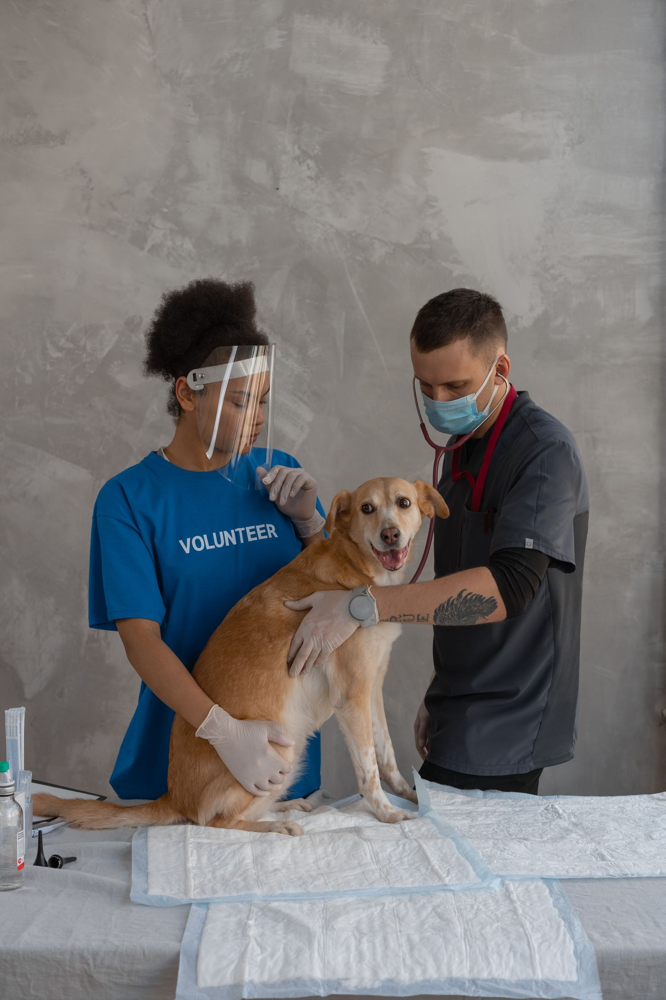

Adressage
Le vétérinaire référent prend contact au sujet du patient et de la demande spécialisée.
Parcours de référé
Une expertise chirurgicale complémentaire, dans une relation de confiance avec le vétérinaire traitant et au service de la continuité des soins.
Un parcours coordonné
Les étapes ci-dessous reprennent l’intention du projet : rendre le parcours facile à comprendre, de la première prise de contact à la poursuite des soins avec le vétérinaire référent.
Le détail opérationnel reste à confirmer par l’équipe CHAL’VET avant publication.

Les grandes étapes
Schéma éditorial de travail. Les intitulés et actions précises doivent refléter l’organisation réellement retenue par la clinique.
Le vétérinaire référent prend contact au sujet du patient et de la demande spécialisée.
La situation est étudiée afin de préciser les prochaines étapes de prise en charge.
Le patient bénéficie d’une évaluation et d’une proposition adaptées à sa situation.
Les informations utiles sont partagées pour favoriser la continuité des soins.
Avant la mise en ligne, confirmer notamment le canal d’adressage, les documents utiles, les moments de communication et le suivi postopératoire.
La maquette Figma prévoit un formulaire organisé par blocs. Cette proposition en reprend la structure pour faciliter la lecture et la saisie, sans activer la transmission des données.
Une démarche de complémentarité
La clinique intervient sur le volet chirurgical spécialisé, dans le respect de la relation privilégiée entre le vétérinaire et son client.